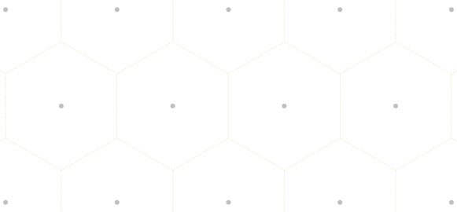
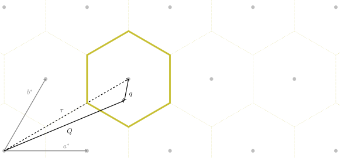
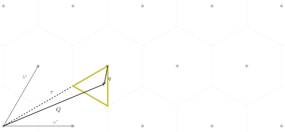
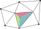
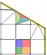

Introduction
Background
Lattices
An infinite set of points which are indistinguishable for a specific set of rigid translations form a lattice.
The easiest conceived lattice is one formed by the combinations of the whole numbers on a set of Cartesian axes. In two dimensions, this is equivalent to the intersections of lines on a piece of graphing paper. If the vector pointing from any one such intersection point to its neighbour along the \(x\) axis is \(\mathbf{a}=[1\,0]\), and along the \(y\) axis is \(\mathbf{b}=[0\,1]\), then the allowed translations which result in an indistinguishable lattice are \(\mathbf{r} = i\mathbf{a} + j\mathbf{b}\) where both \(i\) and \(j\) are integers.
Although only translational invariance is necessary for a lattice, this specific lattice has a number of additional invariant operations in the form of rotations and rotoinversions that form a group,
where for every element, \(G\in\mathbb{G}\), there exists an equivalent product of elements of \(\mathbb{G}\). This allows a reduced representation of \(\mathbb{G}\) by a minimal set of its elements, called its generators, which can be combined to produce all other elements.
Lattices like the one described above, where the repeated unit is point-like, are called Bravais lattices and, in three dimensions, there are \(14\) unique Bravais lattices.
If the repeated unit is considered independent of the lattice, it is possible to conceive of shapes which have their own rotation and rotoinversion symmetries. There are \(32\) unique sets of rotational symmetries in three dimensions each of which forms a Point group.
Combining the symmetries of a Point group and a Bravais lattice gives rise to a set of symmetry operations with is comprised of rotations, rotoinversions, translations, screw axes, and glide planes which form a Space group, of which there are \(230\) distinct combinations in three dimensions.
All crystalline materials have a structure characterised by one of the Space groups.
Direct lattices
While the specific example of a Lattice given above
was described in terms of a physical lattice, Lattices are not limited to any
one space. To remove any ambiguity, throughout brille Lattices
which describe the positions of atoms in real space and their properties are
referred to as Direct lattices.
Reciprocal lattices
For every Lattice there exists a dual lattice which is, effectively, its
inverse. While a Direct lattice describes atom positions, its dual lattice
describes the relative orientations of planes of atoms.
Constructing such a dual lattice is straightforward following references easily
found elsewhere, but importantly where a lattice can be described by the lengths
of its basis vectors, the basis vectors of its dual lattice have units of
inverse, or reciprocal, length.
For this reason the dual lattice of a Direct lattice is referred to here as a
Reciprocal lattice.
Physical Properties
The physical properties of any crystalline material have the same symmetry
as its Space group.
The goal of brille is to simplify leveraging the Space group symmetry
information in other software projects dealing with the physical properties
of crystalline materials.
Brillouin zone
The region of space around each lattice point which is closer to that point than to any other is its Wigner-Seitz cell. As we can see for the case of a Lattice with hexagonal symmetry, the Wigner-Seitz cells of all lattice points tile the space of the Lattice.

If we consider that the Lattice is a Reciprocal lattice, with basis vectors \(\mathbf{a}^*\) and \(\mathbf{b}^*\), then we can construct the Wigner-Seitz cell for any lattice point \(\boldsymbol{\tau} = h\mathbf{a}^* + k\mathbf{b}^*\) by finding the intersections of all planes, each described by the point \(\boldsymbol{\tau}+\frac{i}{2}\mathbf{a}^*+\frac{j}{2}\mathbf{b}^*\) and normal vector \(i\mathbf{a}^*+j\mathbf{b}^*\) with \(i,j\) integers; the Wigner-Seitz cell is bounded by all such planes without any planes closer to \(\boldsymbol{\tau}\).
This is also the definition of the first Brillouin zone, where higher-order Brillouin zones are the regions between planes successively further from \(\mathbf{G}\).

Since the properties of the lattice follow the periodicity of the lattice, any measurable quantity must repeat from one first Brillouin zone to the next. This allows for descriptions of the physical properties which depend on, e.g., a reduced momentum transfer \(\mathbf{q} = \mathbf{Q}-\mathbf{G}\)

Irreducible first Brillouin zone
The first Brillouin zone may contain redundant information depending on the Point group symmetry of the Space group. If the two-dimensional hexagonal lattice above possesses a six-fold rotation axis perpendicular to the plane, so that the information within each first Brillouin zone is repeated six times, then the zone can be reduced. The definition of an irreducible zone is not unique, but one choice for this Reciprocal lattice is shown below

The properties at an arbitrary momentum transfer \(\mathbf{Q}\) can be related to those within the irreducible first Brillouin zone by
where \(G\) is one of the Point group operators, \(\mathbf{q}_\text{ir}\) is a vector within the irreducible first Brillouin zone, and \(\boldsymbol{\tau}\) is a Reciprocal lattice point.
Since the irreducible first Brillouin zone contains all of the information about
the physical properties of a material, it can and should be used by projects
aiming to model those properties efficiently.
To help in this task, brille defines BrillouinZone to
construct the first Brillouin zone and an irreducible Brillouin zone for any
Reciprocal lattice.
Inelastic Neutron Scattering
Inelastic neutron scattering is an experimental technique which measures the probability of transitions between states of a condensed matter system, which in turn can tell us about the types and strengths of interactions within the material.
Inelastic neutron scattering benefits from the use of neutrons with wavelengths comparable to typical interatomic spacings and energies comparable to typical energy levels of condensed matter systems.
The straightforward comparison of intensity measured on a neutron spectrometer and favourable wavelength and energy of available neutrons compensates for the difficulty of neutron production compared to, e.g., x-rays which are easier to produce but can not have both favourable wavelengths and energies in the same photon.
The difficulty of producing neutron beams led to the development of instruments like the Direct Geometry Time of Flight neutron spectrometer. Such instruments have an array of detectors at fixed positions and detect changes in the neutron energy by measuring the time it takes for a detected neutron to arrive at the detector. By knowing the neutron’s initial, \(\mathbf{k}_\text{i}\), and final momentum, \(\mathbf{k}_\text{f}\) it is straightforward to work out the momentum and energy transferred to the sample.
Motivation
Through the use of one or more choppers, Direct Geometry Time of Flight spectrometers select a single \(\mathbf{k}_\text{i}\) for all neutrons which interact with the sample before being counted in a detector. Each detector is at a unique set of spherical angles \((\theta,\phi)\) relative to \(\hat{\mathbf{k}_\text{i}}\) and therefore each counts neutrons with a unique \(\hat{\mathbf{k}}_\text{f}\). As a result each detector measures along a path through reciprocal \((\mathbf{Q},E)\) space which is constrained by the kinematic relations listed above.
Theoretical models of interactions in a material typically involve solving
an eigenvalue problem for a given \(\mathbf{Q}\) and are therefore best
suited for simulating along \((\mathbf{Q},E)\) paths with
constant-\(\mathbf{Q}\).
brille aims to help such models by reducing the number of
\(\mathbf{Q}\) points where they must perform their (typically expensive)
calculation and interpolates their results onto the \((\mathbf{Q},E)\) paths
measured during experiments.
To accomplish this, a number of polyhedron-filling connected grids are defined;
notably BZTrellisQdc and similar variants.
The model calculation is evaluated for \(\mathbf{Q}\) points defined by
the vertices of the polyhedra which comprise the grid.
Interpolation is done then by finding the polyhedron which encloses the desired
point and linearly weighting the pre-calculated values at the vertices by the
distance from the desired point to each vertex.
Irreducible Brillouin zone interpolation
Since physical properties of crystalline solids are unique only within the first irreducible Brillouin zone, only \(\mathbf{Q}\) points within this region need be calculated by the expensive model calculation. Thus, the polyhedron-filling connected grids takes a first Brillouin zone polyhedron or an irreducible Brillouin zone polyhedron plus, e.g., a maximum distance between grid nodes or a maximum grid cell volume, and define a grid.
Cartesian grid

One simple approach to defining a grid within a polyhedron is to
define one vertex of the polyhedron as the origin,
find the vertex farthest away from the origin
subdivide the rectangular prism defined by these two points.
Such a grid has the advantage that for all space within it, the closest grid point(s) can be calculated analytically. This lends itself to fast neighbour location and fast linear interpolation.
A disadvantage to such a grid is that it can only be commensurate with polyhedra which are also rectangular prisms, which is the case only for irreducible first Brillouin zones of primitive cubic, primitive tetragonal, and primitive orthorhombic space groups. When the grid is not commensurate with the polyhedron it is likely to introduce unmanageable artifacts in any interpolation result.
The disadvantages of the basic Cartesian grid are so restrictive that
brille does not implement a three-dimensional Cartesian grid object.
\(n\)-simplex grid

Another straightforward approach to defining a grid within a polyhedron is the
use of a tetrahedral tiling. Tetrahedra being the three dimensional simplex.
Creating such a tiling with nice properties is nontrivial, so brille uses the
TetGen library to do the heavy lifting.
Tetrahedral tilings have the advantage that they can be made commensurate with any polyhedron, and therefore never introduce unmanageable artefacts when interpolating near their surfaces. But they lack the ability to calculate which tetrahedron contains a specified point. So interpolating with a tetrahedral tiling is either slow or requires substantial meta-information to be determined in advance.
The classes BZMeshQdc and BZNestQdc
implement 3-D \(n\)-simplex grids which fills and does not extend beyond
the boundaries of a [irreducible] Brillouin zone. The differences between the
two classes relate to how their (meta)data is stored, either in a flat or tree
format as described in the grids page.
Hybrid grid

An alternative approach is to combine a Cartesian grid with a \(n\)-simplex grid. Such a grid has its rectangular-prism cells replaced by triangulated truncated-rectangular-prisms on the surface of the polyhedron.
Such a construction has the advantage of direct calculation of the cell which contains any given point with a much-faster search over only those tetrahedra within the cell if the rectangular-prism passes the surface of the polyhedron.
The class BZTrellisQdc implements a hybrid grid in three dimensions
which fills and does not extend beyond the boundaries of a [irreducible]
Brillouin zone.